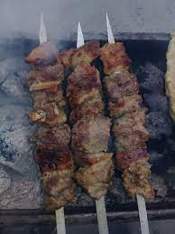

Shashlik

Tarifi
Issiq kunlar kelishi bilan do’stlar va oila davrasida dam olish uchun bizda shashlik tayyorlashga hozirlik ko’riladi. Kimdir uyida, kimdir esa tabiatda shashlik tayyorlaydi. Tashqi tarafdan shashlik pishirish oson ko’rinadi. Lekin hammasini yanada yaxshiroq qilish mumkin
Birinchidan, shashlik tayyorlash uchun eng muhim narsa — to’g’ri go’shtni sotib olish va hech kimni unga yaqinlashtirmaslik. Ikkinchidan, marinad va umumiy tayyorgarlik iloji boricha oddiy, qisqa va tabiiy bo’lishi kerak. Uchinchidan, go’shtni sixga o’rnatgandan keyin tuzlash kerak. To’rtinchidan, sixga go’sht va yog’dan tashqari boshqa narsa qo’ymaslik kerak — pomidor, piyoz, tuzlangan bodring shular qatoridan, bularni barchasini fotosuratchilar o’ylab topgan, hayotda esa bunday ahmoqonaliklar faqat xalaqit beradi. Beshinchidan, yaxshi shashlik pishirish barchaning qo’lidan keladi.
Masallig'lar
- Go'shti – 0,5 kg.
- Charvi yog' – 200 gr.
- Piyoz – 100-150 gr.
- Tuz va ziravorlar ta'bga ko'ra.
- Bir necha bo'lak non.
Tayyorlash tartibi
- Yuqorida sanab o'tilgan mahsulotlarni hammasini aralashtirib qiymalagichdan o'tkaziladi agarda qiymalagich ko'zi (teshigi) yirik bo'lsa ikki marta, mayda bo'lsa bir marta ham o'tkazish kifoya qiladi.
- Qiymaning tuz va ziravorlani tatib, kam-ko'stini to'g'irlab, yaxshilab ezib aralashtiriladi va yarim soat, bir soat mobaynida muzlatgichga solib qo'yiladi, issiq qiyma qo'rada oqib ketishi mumkin, shuning uchun qiyma muzlatilsa yaxshiroq yopishadi
- So'ngra sixni uzun yoki kaltaligiga qarab qiymani 80-120 grammlik bo'laklarga bo'lib olinadi va qo'lni namlab har bir qiyma bo'laklarini sixlab chiqiladi.
- Sixlab bo'lgach agarda olov tayyor bo'lmasa kaboblar issiq joyda turib bir biriga yopishib qiyma isib qolmasligi uchun to olov tayyor bo'lguncha yana muzlatgichga solib qo'yish tavsiya etiladi.
- Qiyma kaboblarni ko'mir yonib usti biroz kul qoplagan cho'g' ustiga qo'yib pishirib olinadi, kaboblarning katta yoki kichikligiga qarab 5-8 daqiqa mobaynida pishirib olish mumkin. Pishgan kaboblarni ta'bga ko'ra bezatib biron bir sous bilan dasturxonga tortiq qilish mumkin.